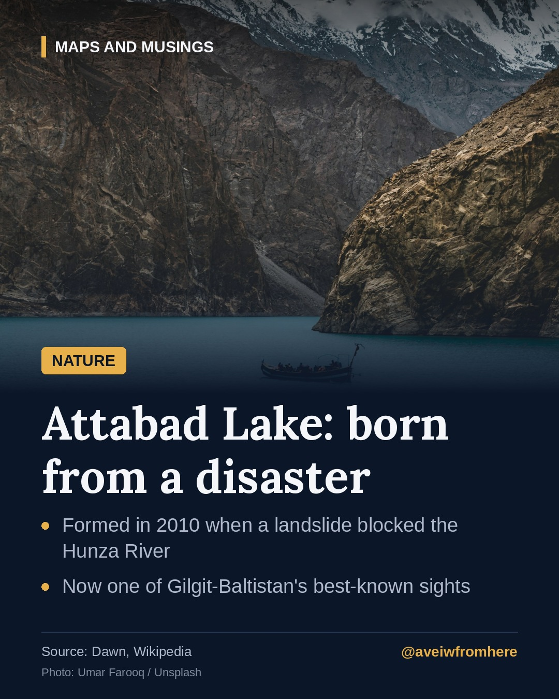

Attabad Lake: the lake that was born from a disaster
In 2010, a massive landslide blocked the Hunza River. The water that rose behind it became one of Gilgit-Baltistan's best-known sights.

High in the Karakoram, in Pakistan's Hunza valley, lies a lake that did not exist before 2010.
The landslide
In January 2010, a massive landslide came down near the village of Attabad. It buried homes and blocked the Hunza River completely.
With nowhere to go, the river began to back up behind the debris. Over the following months the water rose steadily, flooding villages upstream and submerging a long stretch of the Karakoram Highway, the vital road link between Pakistan and China. For a time, communities further up the valley could only be reached by boat.
A new landscape
The lake that formed is several kilometres long and sits between steep mountain walls. Its water, coloured by fine glacial sediment, turned a striking shade of turquoise.
From tragedy to destination
What began as a disaster for the people of Hunza has, over the years, become one of Gilgit-Baltistan's most visited places. Boats now carry visitors across the water, and the lake has become a symbol of the region's rugged beauty, and of the resilience of the communities who rebuilt around it.
If you visit, remember the history beneath the surface, and support local businesses run by families who lived through the landslide.